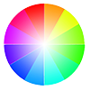

ピクチャの色相を変えるプラグイン
概要
ピクチャの色相を変えるプラグインを作りました。
デフォルトでは色調を変えることはできますが、色相は変更できません。
色相を変えると以下の動画のように自然な感じで色違いのピクチャを作れます。
以下のような色相環をぐるっと360度回す感じになります。
白や黒、モノクロの画像は色相を変えても色は変化しませんので注意が必要です。

ちなみに色調はtone、色相はhueです。
プラグインコマンド
RotateHue arg0 arg1
arg0はピクチャ番号、arg1はデフォルトからの色相の回転角度。単位は度
- 例:
RotateHue 1 180
引数には変数の制御文字が使えます。
- 例:
RotateHue \V[3] \V[4]
角度なので0～359が有効な値ですが、-180、360、720などを入力は可能です。
デフォルトからの回転角度なのでRotateHue 1 180を2回呼んでも360にはなりません。
ダウンロード
色あいを変えるプラグインと同一です。
色相を変えるプラグインはRotateHue.jsでしたが、今回統合してPictureColorChange.jsになりました。
申し訳ないのですが、RotateHue.jsは削除してこちらに差し替えてください(プラグインコマンドは同じなのでファイル差し替えのみ)。
ピクチャ合成について
ピクチャ合成系のプラグインには対応していません。ピクチャ合成もピクチャを加工するため、色相を変えて合成すると競合してしまいます。対応するにはピクチャ合成プラグインとこちらのプラグインを両方セットで調整しなければなりません。
ライセンス
Released under the MIT license
技術的な解説
色相を変えるメソッドはデフォルトで実装はされていて、Bitmap.prototype.rotateHue がそのメソッドです。 敵キャラの色相変更で利用されています。
これを呼べば簡単にできるのですが落とし穴があり、Bitmapをそのまま書き換えます。
何が問題になるかというと、キャッシュです。画像はロードするとキャッシュされますが、色相をいじるとキャッシュした画像をそのまま書き換えてしまい、その画像はずっと色相が変わったままになってしまいます。
一つの解決策としてロード時に色相を指定することが挙げられます。
ImageManager.loadNormalBitmap = function(path, hue)とあるようにhueを指定してBitmapをロードできます。実はデフォルトでは色相つきでキャッシュされています。敵キャラの色相の変更がそうなっています。
以下の箇所でキャッシュのキーを生成しているのですが、画像のパスと色相でキーを作っています。この組み合わせのキーでキャッシュを検索して、存在すればキャッシュの画像を使用し、なければロードするということです。
ImageManager._generateCacheKey = function(path, hue){
return path + ':' + hue;
};
一見、hue付きでロードすれば解決するように見えますが、ちらつきの問題があります。
プリロードしようにも画像+色相の組み合わせをプリロードするのは無理があります。
なので今回は、色相を弄る前の画像をコピーして色相を変える方法でこれを回避しています。